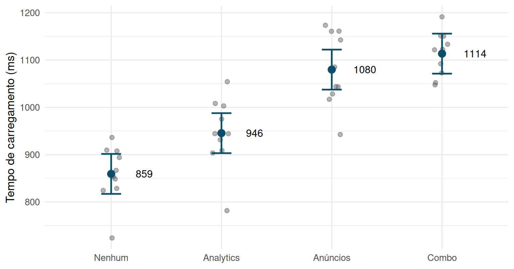
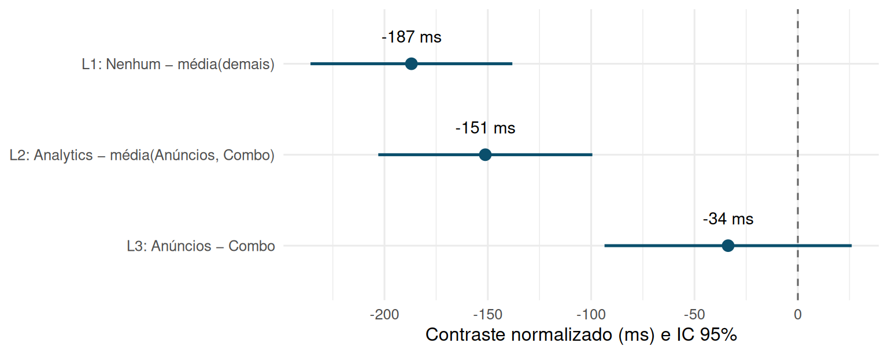
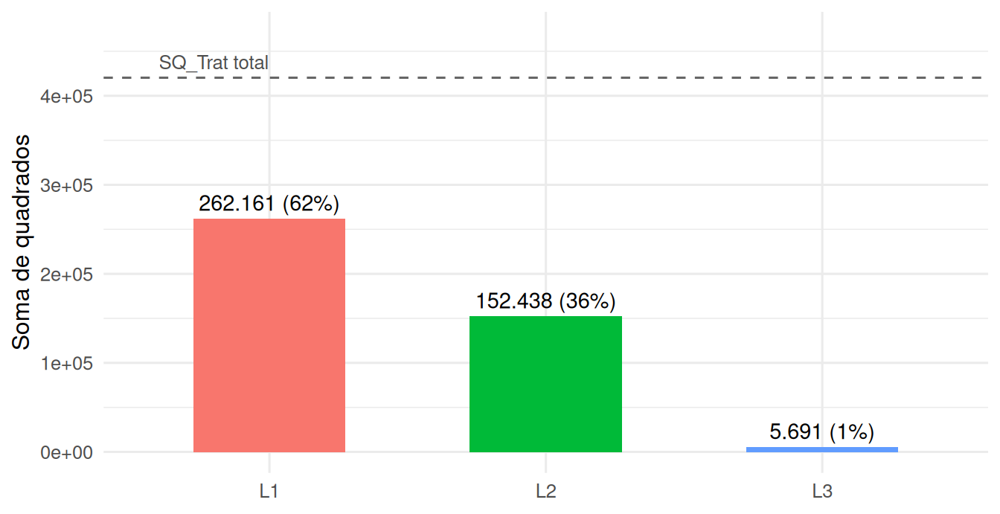

3.6 Contrastes e comparações múltiplas
A ANOVA de um fator responde a uma pergunta agregada: existe pelo menos uma diferença entre as \(t\) médias de tratamento? Rejeitar \(H_0: \mu_1 = \mu_2 = \cdots = \mu_t\) não diz quais médias diferem, nem em que direção, nem de quanto. Contrastes e procedimentos de comparação múltipla respondem exatamente a essas perguntas mais específicas — mas, como veremos, fazê-lo com rigor exige cuidado extra, porque testar muitas hipóteses sobre o mesmo conjunto de dados infla a chance de pelo menos um falso positivo. As três seções que seguem (contrastes, comparações múltiplas e polinômios ortogonais) usam dois conjuntos de dados, mostrados por inteiro antes de qualquer teste, e seguem sempre a mesma ordem: a teoria, os dados, a conta feita à mão, a conferência no R, o gráfico e a interpretação.
Vale explicitar a leitura causal por trás desta seção, retomando o arcabouço de resultados potenciais introduzido no Capítulo 1: cada unidade experimental tem \(t\) resultados potenciais \(Y_i(1), \ldots, Y_i(t)\) — um por braço de tratamento —, dos quais só o do braço sorteado é observado. Cada média \(\mu_i = E[Y(i)]\) é a média populacional do resultado potencial sob o tratamento \(i\), e um contraste par a par \(\mu_i - \mu_j\) é, literalmente, um efeito médio de tratamento (ATE) entre os braços \(i\) e \(j\). Um contraste mais geral também é causal: \(\mu_1 - \tfrac13(\mu_2+\mu_3+\mu_4)\) é o ATE do braço 1 contra uma mistura uniforme dos braços 2, 3 e 4. Quando \(t>2\), existem \(\binom{t}{2}\) ATEs par a par possíveis — mais uma infinidade de contrastes que agregam grupos de braços —, e é essa multiplicidade de efeitos causais estimados simultaneamente sobre o mesmo experimento que faz emergir, de forma natural e não como artefato técnico do procedimento estatístico, o problema de comparações múltiplas da próxima seção: cada ATE testado isoladamente carrega seu próprio risco de falso positivo, e responder “algum desses efeitos é diferente de zero?” exige um controle de erro que leve todos eles em conta simultaneamente.
suppressPackageStartupMessages({
library(tidyverse)
library(kableExtra)
library(broom)
library(emmeans)
library(multcomp)
library(car)
library(agricolae)
})
# formatação em português; fm() e fpm() são para números dentro de $...$ (MathJax)
fmt <- function(x, d = 1) formatC(x, format = "f", digits = d, big.mark = ".", decimal.mark = ",")
fp <- function(p) ifelse(p < 0.0001, "< 0,0001", formatC(p, format = "f", digits = 4, decimal.mark = ","))
fm <- function(x, d = 1) gsub(",", "{,}", fmt(x, d), fixed = TRUE)
fpm <- function(p) gsub(",", "{,}", fp(p), fixed = TRUE)
set.seed(2026)
config <- c("Nenhum", "Analytics", "Anúncios", "Combo")
n_por_grupo <- 10
# efeito verdadeiro (ms) de cada configuração de scripts de terceiros sobre o
# tempo de carregamento da página, em relação à configuração "Nenhum" (controle)
efeito_config <- c(Nenhum = 0, Analytics = 60, Anúncios = 140, Combo = 210)
dados_scripts <- tibble(
pagina = 1:(4 * n_por_grupo),
config = factor(rep(config, each = n_por_grupo), levels = config),
tempo_ms = 900 + efeito_config[as.character(config)] +
rnorm(4 * n_por_grupo, mean = 0, sd = 70)
)
mod_scripts <- aov(tempo_ms ~ config, data = dados_scripts)Uma equipe de engenharia web quer comparar quatro configurações de uma página de produto quanto ao tempo de carregamento: Nenhum script de terceiros (controle), Analytics apenas, Anúncios apenas, e Combo (chat de suporte + anúncios). Dez carregamentos independentes são medidos em cada configuração (
n = 10 por grupo, 40 no total), sob condições de rede controladas e em ordem sorteada
(UE = carregamento). Antes da coleta, a equipe registrou três perguntas: (i) scripts
de terceiros atrasam a página? (ii) se for para ter um script, o de analytics é o mais leve?
(iii) acrescentar o chat aos anúncios custa caro?
Os 40 carregamentos foram feitos numa ordem sorteada, na mesma máquina e na mesma rede. Comparar, em vez disso, sites reais que usam ou não anúncios e chat misturaria scripts com tipo de site (sites com anúncios tendem a ser maiores), e nenhuma correção para comparações múltiplas removeria essa mistura.
3.6.1 Os dados e a ANOVA global
A Tabela 3.14 mostra os 40 tempos medidos. Cada coluna é um tratamento e cada linha, uma réplica; a numeração da réplica não tem significado (não há pareamento entre o carregamento 3 de “Nenhum” e o carregamento 3 de “Combo”), é só uma forma compacta de dispor os dados de um DCA.
| Réplica | Nenhum | Analytics | Anúncios | Combo |
|---|---|---|---|---|
| 1 | 936 | 931 | 1017 | 1073 |
| 2 | 824 | 909 | 1028 | 1122 |
| 3 | 910 | 944 | 943 | 1092 |
| 4 | 894 | 944 | 1143 | 1133 |
| 5 | 853 | 782 | 1043 | 1123 |
| 6 | 724 | 1054 | 1174 | 1192 |
| 7 | 849 | 1003 | 1161 | 1152 |
| 8 | 829 | 975 | 1044 | 1048 |
| 9 | 908 | 904 | 1085 | 1150 |
| 10 | 867 | 1008 | 1161 | 1052 |
| Configuração | n | Média | DP | Mín. | Máx. |
|---|---|---|---|---|---|
| Nenhum | 10 | 859.4 | 60.3 | 723.9 | 936.4 |
| Analytics | 10 | 945.5 | 74.6 | 781.7 | 1054.3 |
| Anúncios | 10 | 1079.9 | 77.4 | 942.6 | 1173.6 |
| Combo | 10 | 1113.6 | 46.7 | 1047.6 | 1191.5 |

Figura 3.18: Tempos de carregamento individuais (pontos cinza) e média de cada configuração com intervalo de confiança de 95% calculado com o QME combinado da ANOVA (36 gl), em azul.
O gráfico já sugere a ordenação Nenhum < Analytics < {Anúncios ≈ Combo}, e os desvios-padrão parecidos (de 47 a 77 ms) são compatíveis com a homocedasticidade que o \(QME\) combinado pressupõe. A ANOVA global quantifica o que se vê:
## # A tibble: 2 × 6
## term df sumsq meansq statistic p.value
## <chr> <dbl> <dbl> <dbl> <dbl> <dbl>
## 1 config 3 420290. 140097. 32.2 2.67e-10
## 2 Residuals 36 156479. 4347. NA NACom \(F = 32{,}23\) em (3, 36) gl, não há dúvida razoável de que as configurações diferem; \(R^2 = SQ_{\text{Trat}}/SQ_{\text{Total}} = 0{,}73\), ou seja, a configuração explica cerca de 73% da variação dos tempos. O desvio-padrão de um carregamento dentro de uma configuração é \(\sqrt{QME} = 65{,}9\) ms, e o erro-padrão de uma diferença entre duas médias é \(\sqrt{2QME/10} = 29{,}5\) ms — a “unidade de ruído” contra a qual todas as comparações desta seção serão medidas. Até aqui sabemos que há diferença; as subseções seguintes respondem onde, quanto e com que garantia.
3.6.2 Definição, esperança e variância de um contraste
Sejam \(\mu_1, \ldots, \mu_t\) as médias populacionais dos \(t\) tratamentos. Um contraste é qualquer combinação linear
\[L = \sum_{i=1}^{t} c_i \mu_i, \qquad \text{sujeita a} \qquad \sum_{i=1}^{t} c_i = 0.\]
A restrição \(\sum c_i = 0\) é o que distingue um contraste de uma combinação linear qualquer: ela garante que \(L\) mede uma diferença entre grupos (ou grupos de grupos), não um nível geral. Formalmente, somar a mesma constante \(k\) a todas as médias não altera \(L\), porque \(\sum c_i(\mu_i + k) = L + k\sum c_i = L\) — um contraste é invariante ao nível geral da resposta, exatamente como deve ser uma comparação. Com os dados, \(L\) é estimado por \(\hat L = \sum_{i=1}^t c_i \bar y_{i\cdot}\), trocando cada \(\mu_i\) pela média amostral do respectivo grupo. Como as médias amostrais dos \(t\) grupos são independentes (unidades experimentais diferentes) e \(E(\bar y_{i\cdot}) = \mu_i\),
\[E(\hat L) = \sum_{i=1}^t c_i\, E(\bar y_{i\cdot}) = \sum_{i=1}^t c_i \mu_i = L,\]
ou seja, \(\hat L\) é um estimador não viesado de \(L\). Assumindo variância homogênea \(\sigma^2\) entre tratamentos (o mesmo pressuposto de homocedasticidade da ANOVA) e \(n_i\) réplicas no tratamento \(i\),
\[\mathrm{Var}(\hat L) = \sum_{i=1}^t c_i^2\, \mathrm{Var}(\bar y_{i\cdot}) = \sigma^2 \sum_{i=1}^t \frac{c_i^2}{n_i},\]
que se reduz a \(\mathrm{Var}(\hat L) = \dfrac{\sigma^2}{n}\displaystyle\sum_{i=1}^t c_i^2\) no caso balanceado (\(n_i = n\) para todo \(i\)), o caso mais comum na prática e o único em que os coeficientes \(c_i\) tabulados na literatura clássica se aplicam diretamente.
Cada pergunta científica se traduz num vetor de coeficientes pela mesma receita: coeficientes positivos nos tratamentos de um lado da pergunta, negativos nos do outro lado, zero nos que não participam, e soma zero. Para as três perguntas registradas no protocolo do exemplo:
| Pergunta | \(L\) | \((c_1,c_2,c_3,c_4)\) |
|---|---|---|
| Scripts de terceiros atrasam a página? | \(\mu_1-\tfrac13(\mu_2+\mu_3+\mu_4)\) | \((3,-1,-1,-1)\) |
| Analytics é mais leve que os que têm anúncio? | \(\mu_2-\tfrac12(\mu_3+\mu_4)\) | \((0,2,-1,-1)\) |
| O chat acrescenta tempo aos anúncios? | \(\mu_3-\mu_4\) | \((0,0,1,-1)\) |
Multiplicar todos os \(c_i\) por uma constante não muda o teste (só a escala de \(\hat L\)); por isso costuma-se usar inteiros, \((3,-1,-1,-1)\) em vez de \((1,-\tfrac13,-\tfrac13,-\tfrac13)\).
3.6.3 Normalização e intervalo de confiança
A conveniência dos inteiros tem um custo de leitura: com \((3,-1,-1,-1)\), \(\hat L\) é três vezes a diferença entre a média do controle e a média das demais, e não essa diferença. Para interpretar um contraste na escala da resposta, divide-se cada coeficiente pela soma dos coeficientes positivos,
\[c_i^{*} = \frac{c_i}{\sum_{c_j>0} c_j} \qquad\Longrightarrow\qquad \hat L^{*} = \bar m_{+} - \bar m_{-},\]
em que \(\bar m_{+}\) e \(\bar m_{-}\) são as médias simples das médias de tratamento de cada lado da pergunta. O contraste normalizado \(\hat L^{*}\) está em ms, e seu intervalo de confiança de \(100(1-\alpha)\%\) — válido para um contraste especificado antes dos dados — é
\[\hat L^{*} \pm t_{\alpha/2,\;gl_{\text{erro}}}\sqrt{QME\sum_{i=1}^t \frac{(c_i^{*})^2}{n_i}}.\]
A estatística \(t\), o \(F\) e o p-valor são idênticos com \(c_i\) ou \(c_i^{*}\) (a constante se cancela entre numerador e denominador); só a leitura muda. A recomendação prática é reportar sempre \(\hat L^{*}\) com seu intervalo: o teste diz se há efeito, o intervalo diz quanto, e as duas informações são necessárias para uma decisão.
3.6.4 Soma de quadrados de um contraste e sua distribuição
A soma de quadrados atribuível a um contraste é
\[SQ_L = \frac{\hat L^{\,2}}{\sum_{i=1}^t c_i^2/n_i},\]
com 1 grau de liberdade, qualquer que seja o número de tratamentos \(t\) — um contraste é, por construção, uma comparação de uma única dimensão. Sob \(H_0: L = 0\) e o modelo usual de ANOVA com erros \(\varepsilon_{ij} \sim N(0,\sigma^2)\) independentes,
\[F = \frac{SQ_L}{QME} \sim F_{1,\, gl_{\text{erro}}},\]
onde \(QME\) é o quadrado médio do erro da ANOVA completa. Essa estatística é equivalente a um teste \(t\) com \(gl_{\text{erro}}\) graus de liberdade (\(t^2 = F\)), que é a forma mais comum de reportar um contraste isolado:
\[t = \frac{\hat L}{\sqrt{QME \sum_i c_i^2/n_i}}.\]
Um contraste é, portanto, um teste com 1 grau de liberdade encaixado dentro da ANOVA — mais específico e, em geral, mais poderoso do que o teste F global de \(t-1\) graus de liberdade, desde que a pergunta específica seja definida antes de olhar os dados. A intuição do ganho de poder é geométrica: se o efeito verdadeiro está concentrado numa única direção do espaço de tratamentos, o \(F\) global o dilui por \(t-1\) graus de liberdade, enquanto o contraste aponta direto para aquela direção e não “paga” pelas outras \(t-2\).
3.6.5 Notação matricial: contraste como forma linear e quadrática
Recorde o modelo linear do Capítulo 2 (Seção 2.3) e sua parametrização de médias de casela (cell-means) para o DCA: \(\mathbf Y = \mathbf X\boldsymbol\mu + \boldsymbol\varepsilon\), em que \(\mathbf X\) é a matriz \(N\times t\) de indicadoras de tratamento (posto coluna completo nessa parametrização) e \(\mathbf X'\mathbf X = \mathrm{diag}(n_1,\ldots,n_t)\). Nessa notação, um contraste é a forma linear
\[L = \boldsymbol\lambda'\boldsymbol\mu, \qquad \boldsymbol\lambda = (c_1,\ldots,c_t)', \qquad \mathbf 1'\boldsymbol\lambda = 0,\]
estimado por \(\hat L = \boldsymbol\lambda'\hat{\boldsymbol\mu} = \boldsymbol\lambda'\bar{\mathbf y}\). Como \(\boldsymbol\lambda'\boldsymbol\mu\) é uma combinação linear estimável (Capítulo 2, Seção 2.5: toda combinação linear é estimável quando \(\mathbf X\) tem posto completo), o teorema de Gauss-Markov (Capítulo 2, Seção 2.6) garante que \(\hat L\) é BLUE, com variância
\[\mathrm{Var}(\hat L) = \sigma^2\,\boldsymbol\lambda'(\mathbf X'\mathbf X)^{-1}\boldsymbol\lambda = \sigma^2\sum_{i=1}^t \frac{c_i^2}{n_i},\]
que reproduz exatamente o resultado escalar da subseção anterior — agora como caso particular de \(\mathrm{Cov}(\hat{\boldsymbol\beta}) = \sigma^2(\mathbf X'\mathbf X)^{-1}\).
A soma de quadrados do contraste é a forma quadrática de posto 1
\[SQ_L = (\boldsymbol\lambda'\hat{\boldsymbol\mu})\,\big[\boldsymbol\lambda'(\mathbf X'\mathbf X)^{-1}\boldsymbol\lambda\big]^{-1}\,(\boldsymbol\lambda'\hat{\boldsymbol\mu}) \;=\; \mathbf Y'\mathbf A_{\boldsymbol\lambda}\mathbf Y,\]
em que \(\mathbf A_{\boldsymbol\lambda}\) é simétrica e idempotente, de posto 1 — uma projeção sobre a direção \(\mathbf X(\mathbf X'\mathbf X)^{-1}\boldsymbol\lambda\) dentro do subespaço de tratamento. Pelo teorema sobre formas quadráticas idempotentes do Capítulo 2 (Seção 2.10), \(SQ_L/\sigma^2 \sim \chi^2_1\) sob \(H_0: L=0\) — a mesma conclusão obtida escalarmente acima, agora como caso particular de um resultado geral, não uma coincidência.
Essa leitura geométrica também explica por que contrastes ortogonais se comportam tão bem: um conjunto de \(t-1\) contrastes ortogonais \(\boldsymbol\lambda_1,\ldots,\boldsymbol\lambda_{t-1}\) corresponde a \(t-1\) projeções de posto 1 mutuamente ortogonais, cuja soma reconstrói exatamente a projeção sobre todo o subespaço de tratamento:
\[\sum_{k=1}^{t-1} \mathbf A_{\boldsymbol\lambda_k} \;=\; \mathbf P_X - \mathbf P_{\mathbf 1},\]
a mesma diferença de projeções do princípio da soma de quadrados extra (Capítulo 2, Seção 2.8), com \(\mathbf X_1 = \mathbf 1\) (só o intercepto). É essa identidade — uma soma de \(t-1\) projeções ortogonais de posto 1 reconstruindo a projeção de posto \(t-1\) — que, pelo teorema de Cochran citado no Capítulo 2, garante que as \(t-1\) somas de quadrados \(SQ_{L_1},\dots,SQ_{L_{t-1}}\) são mutuamente independentes, e independentes de \(SQ_E\). Note com cuidado o que isso não diz: as estatísticas \(F_k = SQ_{L_k}/QM_E\) compartilham o mesmo denominador aleatório \(QM_E\) e, por isso, não são independentes entre si, ainda que seus numeradores sejam. A distinção é formalizada a seguir.
3.6.6 Contrastes ortogonais
Dois contrastes com coeficientes \(\{c_i\}\) e \(\{d_i\}\) são ortogonais se
\[\sum_{i=1}^t \frac{c_i d_i}{n_i} = 0 \qquad \Big(\text{balanceado: } \sum_{i=1}^t c_i d_i = 0\Big).\]
Para \(t\) tratamentos existem no máximo \(t - 1\) contrastes mutuamente ortogonais. A propriedade notável de um conjunto completo de \(t-1\) contrastes ortogonais é que suas somas de quadrados particionam exatamente a soma de quadrados de tratamento, sem sobra e sem sobreposição:
\[SQ_{\text{Trat}} = \sum_{k=1}^{t-1} SQ_{L_k}, \qquad gl_{\text{Trat}} = \sum_{k=1}^{t-1} 1 = t-1.\]
Sob normalidade, os numeradores \(SQ_{L_k}\) são independentes entre si e do \(QME\), como visto na subseção anterior; os testes \(F_k\) só não são independentes porque dividem pelo mesmo \(QME\) (com muitos graus de liberdade de erro essa dependência é fraca). Isso torna contrastes ortogonais a ferramenta natural para decompor a variação entre tratamentos em perguntas específicas, planejadas antes da coleta de dados: cada pergunta recebe sua própria “fatia” de \(SQ_{\text{Trat}}\), sem que a informação de uma contamine a de outra.
Para os quatro grupos do exemplo de carregamento de página, as três perguntas do protocolo formam um conjunto completo de contrastes ortogonais: os produtos internos são \(L_1\cdot L_2 = 0-2+1+1 = 0\), \(L_1\cdot L_3 = 0+0-1+1 = 0\) e \(L_2\cdot L_3 = 0+0-1+1 = 0\).
| Contraste | Nenhum | Analytics | Anúncios | Combo |
|---|---|---|---|---|
| \(L_1\): Nenhum vs. demais | 3 | -1 | -1 | -1 |
| \(L_2\): Analytics vs. (Anúncios, Combo) | 0 | 2 | -1 | -1 |
| \(L_3\): Anúncios vs. Combo | 0 | 0 | 1 | -1 |
3.6.7 Um contraste calculado à mão
Antes de delegar ao R, vale fazer uma conta completa. A Tabela 3.17 organiza o cálculo de \(L_1\) (controle contra a média das três configurações com script).
| Configuração | \(\bar y_{i\cdot}\) | \(c_i\) | \(c_i\bar y_{i\cdot}\) | \(c_i^2/n_i\) |
|---|---|---|---|---|
| Nenhum | 859,38 | 3 | 2.578,14 | 0,9 |
| Analytics | 945,53 | -1 | -945,53 | 0,1 |
| Anúncios | 1.079,88 | -1 | -1.079,88 | 0,1 |
| Combo | 1.113,62 | -1 | -1.113,62 | 0,1 |
| Soma | 0 | -560,89 | 1,2 |
Daí: \(\hat L_1 = -560{,}9\); \(EP(\hat L_1) = \sqrt{QME \times 1{,}2} = \sqrt{4.346{,}6 \times 1{,}2} = 72{,}2\); \(t = -7{,}77\); \(SQ_{L_1} = \hat L_1^2/1{,}2 = 262.161\) e \(F = SQ_{L_1}/QME = 60{,}3 = t^2\), com (1, 36) gl. Na escala de ms, dividindo pela soma dos coeficientes positivos (3), \(\hat L_1^{*} = -187{,}0\) ms: sem scripts, a página carrega em média 187 ms mais rápido que a média das três configurações com script.
gl_erro <- summary(mod_scripts)[[1]]["Residuals", "Df"]
coefs <- list(
L1 = c(Nenhum = 3, Analytics = -1, `Anúncios` = -1, Combo = -1),
L2 = c(Nenhum = 0, Analytics = 2, `Anúncios` = -1, Combo = -1),
L3 = c(Nenhum = 0, Analytics = 0, `Anúncios` = 1, Combo = -1)
)
resultado_contrastes <- map_dfr(names(coefs), function(nm) {
cc <- coefs[[nm]][names(medias)]
cs <- cc / sum(cc[cc > 0]) # coeficientes normalizados: escala de ms
Lhat <- sum(cs * medias)
ep <- sqrt(qme * sum(cs^2 / ns))
SQ <- sum(cc * medias)^2 / sum(cc^2 / ns) # igual com cc ou cs
tibble(contraste = nm, L_ms = Lhat, ep = ep,
li = Lhat - qt(0.975, gl_erro) * ep, ls = Lhat + qt(0.975, gl_erro) * ep,
SQ = SQ, F = SQ / qme, p_valor = pf(SQ / qme, 1, gl_erro, lower.tail = FALSE))
})
resultado_contrastes## # A tibble: 3 × 8
## contraste L_ms ep li ls SQ F p_valor
## <chr> <dbl> <dbl> <dbl> <dbl> <dbl> <dbl> <dbl>
## 1 L1 -187. 24.1 -236. -138. 262161. 60.3 0.00000000333
## 2 L2 -151. 25.5 -203. -99.4 152438. 35.1 0.000000883
## 3 L3 -33.7 29.5 -93.5 26.1 5691. 1.31 0.260# verificação: a soma das SQ dos 3 contrastes ortogonais reproduz SQ_Trat da ANOVA
sum(resultado_contrastes$SQ)## [1] 420290.4## [1] 420290.4A soma das três somas de quadrados dos contrastes reproduz exatamente a soma de quadrados de tratamento da ANOVA — confirmando a partição. A Figura 3.19 mostra os três contrastes normalizados com seus intervalos, e a Figura 3.20, como cada um se apropria de uma fatia de \(SQ_{\text{Trat}}\).

Figura 3.19: Os três contrastes planejados na escala de ms (coeficientes normalizados), com intervalos de confiança de 95%. A linha tracejada marca o zero (ausência de diferença).

Figura 3.20: Partição da soma de quadrados (SQ) de tratamentos pelos três contrastes ortogonais: as barras somam exatamente a linha tracejada; o rótulo dá a SQ de cada contraste e sua porcentagem da SQ de tratamentos.
A leitura é direta. \(L_1\) e \(L_2\) têm intervalos inteiramente abaixo de zero: scripts de terceiros atrasam a página, e Analytics atrasa bem menos que as configurações com anúncio. Em termos de variação, 62% de toda a diferença entre configurações é “ter ou não ter script”, 36% é “anúncio ou não”, e apenas 1% é “chat em cima do anúncio”. \(L_3\) não é significativo, mas o seu intervalo, de -94 a 26 ms, merece mais atenção do que o p-valor: “não significativo” não quer dizer “igual”. Os dados são compatíveis tanto com o Combo carregando um pouco mais rápido que Anúncios quanto com ele carregando até 94 ms mais lento — e, para uma página de produto, 90 ms podem importar.
3.6.8 Contrastes não ortogonais
Nada impede testar contrastes não ortogonais; cada um continua sendo um teste válido de 1 grau de liberdade. O que se perde é a contabilidade. Considere a família natural “cada configuração contra o controle”, com coeficientes \((-1,1,0,0)\), \((-1,0,1,0)\) e \((-1,0,0,1)\): o produto interno de quaisquer dois deles é \((-1)(-1) = 1 \ne 0\), porque todos reutilizam a média do controle.
coefs_ctrl <- list(`Analytics−Nenhum` = c(-1, 1, 0, 0), `Anúncios−Nenhum` = c(-1, 0, 1, 0),
`Combo−Nenhum` = c(-1, 0, 0, 1))
sq_ctrl <- sapply(coefs_ctrl, function(cc) sum(cc * medias)^2 / sum(cc^2 / ns))
round(c(sq_ctrl, soma = sum(sq_ctrl), SQ_Trat = sq_trat_s))## Analytics−Nenhum Anúncios−Nenhum Combo−Nenhum soma
## 37111 243095 323180 603386
## SQ_Trat
## 420290A soma das três \(SQ\) (603.386) passa de \(SQ_{\text{Trat}}\) (420.290) em 44%: a média do controle, a mais baixa de todas, entra nas três perguntas, e sua distância às demais é contada três vezes. Não há erro de conta — há sobreposição de informação. Cada teste segue válido isoladamente; o que deixa de valer é ler as \(SQ\) como fatias da variação. E, como os três testes são correlacionados positivamente (compartilham \(\bar y_{\text{Nenhum}}\)), a correção adequada para tratá-los como família não é a de Bonferroni, que ignora a correlação, e sim a de Dunnett, que a usa (Seção 3.7).
3.6.9 O que os contrastes respondem nestes dados
Voltando às três perguntas do protocolo:
- Scripts de terceiros atrasam a página? Sim: em média 187 ms (IC 95%: 138 a 236 ms), cerca de 22% do tempo da página limpa.
- Se for para ter um script, Analytics é o mais leve? Sim: Analytics carrega 151 ms mais rápido que a média das duas opções com anúncio (IC: 99 a 203 ms).
- Acrescentar o chat aos anúncios custa caro? Os dados não permitem afirmar nem negar. A
diferença estimada é de 34 ms, com intervalo que inclui zero. Com o
desvio-padrão observado, detectar uma diferença de 30 ms com poder de 80% exigiria cerca de
77 carregamentos por configuração
(
power.t.test(delta = 30, sd = sqrt(qme), power = 0.8)), e não 10: a pergunta (iii) estava subdimensionada no desenho, um lembrete da Seção 3.2.6.
Os três testes estão protegidos sem correção adicional porque são planejados, ortogonais e em número de \(t-1\): cada um usa uma fatia diferente de \(SQ_{\text{Trat}}\).